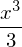
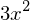
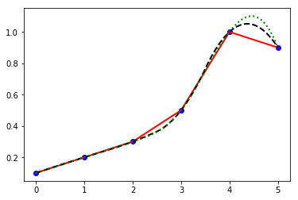
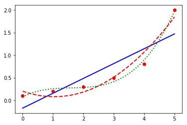
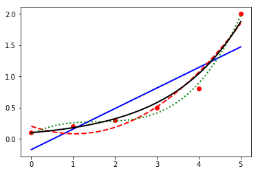
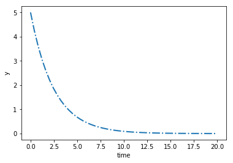

Numpy-笔记2
Table of Contents
1 Numpy
1.1 numpy io
np.savetxt('path', nparrayRef, delimiter=',')np.loadtxt('path', delimiter=',')
import os import numpy as np x = np.linspace(0, 2*np.pi, 4) y = np.cos(x) data = np.vstack((x,y)) data = data.T # <- 'file i' in numpy.savetxt(filename, nparray) np.savetxt('data.txt', data, delimiter=',') print (os.path.abspath("data.txt")) # <- 'file o' z=np.loadtxt('data.txt', delimiter=',') print (x) print (y) print (z)
1.2 numpy matrix operation
1.2.1 solve linear equation by numpy
- np.linalg.inv(nparray)
- np.linalg.solve(a,b) # <- solve ax=b
- sym.linsolve
""" how to solve equation: ax=b """ import numpy as np import sympy as sym A = np.array([[3,2], [1,2]]) print (A) b = np.array([1, 0]) # method-1: x = A^-1 * b sol1 = np.dot(np.linalg.inv(A), b) print (sol1) # method-2: solve equation: ax=b by np.linalg.solve sol2 = np.linalg.solve(A,b) print (sol2) # method-3: solve equation: ax=b by sympy.linsolve sym.init_printing() x, y = sym.symbols('x y') z = sym.linsolve([3*x+2*y-1, x+2*y], (x, y)) sym.pprint(z)
1.2.2 solve nonlinear equation
from scipy.optimize import fsolve def f(z): x=z[0] y=z[1] return [x+2*y, x**2+y**2-1] z0 = [0,1] z = fsolve(f,z0) print (z) print (f(z))
1.2.3 integration
from scipy.integrate import quad def f(x): return x**2 # integrate from 0 to 2 on expression x^2 # method-1: using scipy print (quad(f, 0, 2)[0]) print (2**3/3) # method-2: using sympy import sympy as sym x = sym.Symbol('x') f = sym.integrate(x**2, x) f # sym.pprint(f)

1.2.4 derivative
from scipy.misc import derivative def f(x): return x**2 print (derivative(f, 2, dx=1e-10)) import sympy as sym x=sym.Symbol('x') f=sym.diff(x**3,x) f # f.subs(x, 2) #<- if x=2, what's the result of derivative

1.2.5 interpolation
from scipy.interpolate import interp1d x = np.arange(0,6,1) y = np.array([0.1,0.2,0.3,0.5,1.0,0.9]) %matplotlib inline import matplotlib.pyplot as plt plt.plot(x,y,'bo') xp = np.linspace(0, 5, 100) y1 = interp1d(x,y,kind='linear') plt.plot(xp,y1(xp),'r-') y2 = interp1d(x,y,kind='quadratic') plt.plot(xp,y2(xp),'k--') y3 = interp1d(x,y,kind='cubic') plt.plot(xp,y3(xp),'g:')
[<matplotlib.lines.Line2D at 0x7fe196977630>]

1.2.6 liear regression and a polynormial regression
a polynormial fit
import numpy as np x = np.arange(0, 6, 1) y = np.array([0.1, 0.2, 0.3,0.5, 0.8,2.0]) p1 = np.polyfit(x,y,1) print (p1) p2 = np.polyfit(x,y,2) print (p2) p3 = np.polyfit(x,y,3) print (p3) %matplotlib inline import matplotlib.pyplot as plt plt.plot(x,y,'ro') xp = np.linspace(0, 5, 100) plt.plot(xp,np.polyval(p1, xp),'b-', label='linear') plt.plot(xp,np.polyval(p2, xp),'r--', label='quadratic') plt.plot(xp,np.polyval(p3, xp),'g:', label='cubic') plt.show()

1.2.7 nonlinear regression
a curve fit
import numpy as np from scipy.optimize import curve_fit x = np.arange(0, 6, 1) y = np.array([0.1, 0.2, 0.3,0.5, 0.8,2.0]) p1 = np.polyfit(x,y,1) p2 = np.polyfit(x,y,2) p3 = np.polyfit(x,y,3) def f(x, a): return 0.1 * np.exp(a*x) a = curve_fit(f, x, y)[0] %matplotlib inline import matplotlib.pyplot as plt plt.plot(x,y,'ro') xp = np.linspace(0, 5, 100) plt.plot(xp,np.polyval(p1, xp),'b-', label='linear') plt.plot(xp,np.polyval(p2, xp),'r--', label='quadratic') plt.plot(xp,np.polyval(p3, xp),'g:', label='cubic') plt.plot(xp,f(xp,a),'k-', label='nonlinear') plt.show()

1.2.8 differential equation
from scipy.integrate import odeint # solve: dy/dt= -0.4y def dydt(y, t, a): return -a * y a = 0.4 t= np.linspace(0,20) y0 = 5.0 y = odeint(dydt, y0, t, args=(a,)) fig, ax = plt.subplots() plt.plot(t, y) plt.xlabel('time') plt.ylabel('y') plt.show()

1.2.9 optimization
\(minx_1x_4(x_1+x_2+x_3)+x_3\) <- objective function
\(s.t.: x_1x_2x_3x_4>=25\) <- inequality constraint
\(x_1^2+x_2^2+x_3^2+x_4^2=40\) <- equality constraint
\(1<=x_1,x_2,x_3,x_4<=5\) <- bounds
\(x_0=(1,5,5,1)\) <- initial guess
from scipy.optimize import minimize def objective(x): x1 = x[0] x2 = x[1] x3 = x[2] x4 = x[3] return x1*x4*(x1+x2+x3)+x3 def constraint1(x): x1 = x[0] x2 = x[1] x3 = x[2] x4 = x[3] return x1*x2*x3*x4-25.0 def constraint2(x): sum_sq = 40 for i in range(4): sum_sq = sum_sq - x[i]**2 return sum_sq x0 = [1,5,5,1] # initial guess print (objective(x0)) b = (1.0, 5.0) bnds = (b, b, b, b) con1 = {'type': 'ineq', 'fun': constraint1} con2 = {'type': 'eq', 'fun': constraint2} cons = [con1, con2] sol = minimize(objective, x0, method='SLSQP', bounds=bnds, constraints=cons) print (sol)